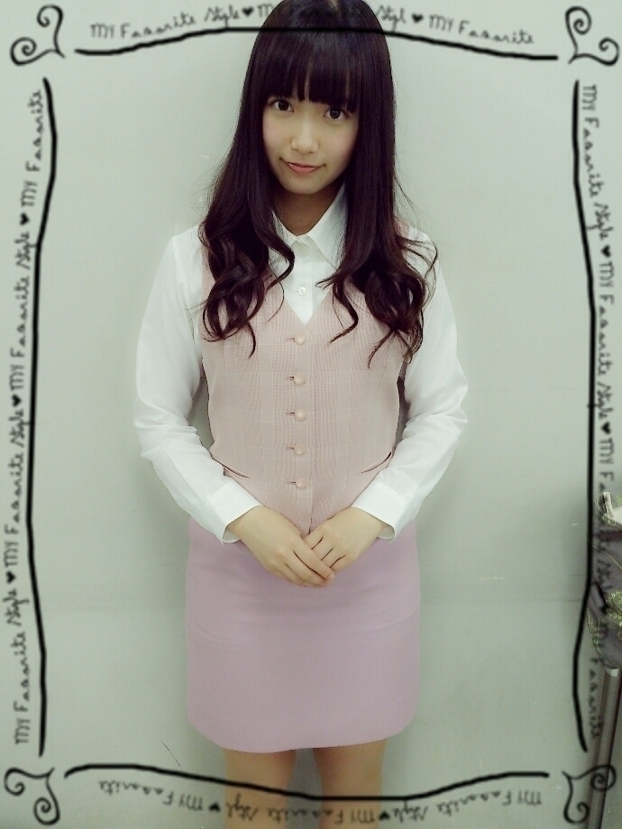
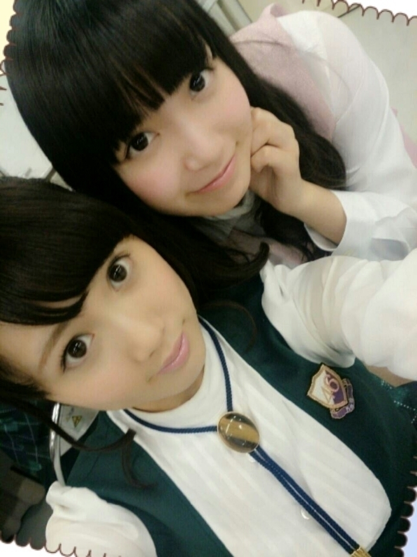
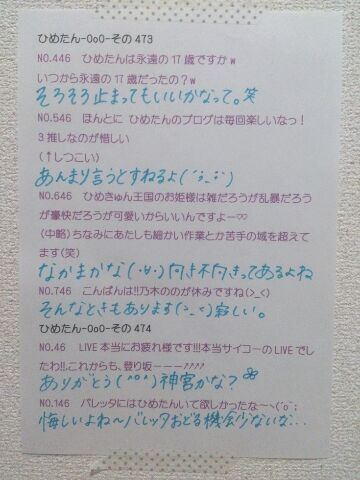

| 2014/11 18 Tue | ひめたん-OoO-その499 |

大阪 似顔絵会&スペシャルライブ
終わりました\( ˆoˆ )/
来てくださったみなさん
ありがとうございました！
今回ふたつのチームに分かれて
ライブをやるのは初の試み。
どうかな？楽しんでもらえたかな？
セットリストはまだ言えないんですが
昨夜限定！他では見れない！
そんなライブだったかなと思う(＊´v`＊)
私個人的には
初めて務めるポジションが多くて
新鮮な気持ちでステージに立ちました
混合にすることで
選抜楽曲においては
選抜メンバーから学んだことがありました❁
アンダーメンバーは
アンダーライブで培ったパワーを
活かせたんじゃないかな...？
とにかく楽しかった！
西日本選抜大好き\( ˆoˆ )/
またこのメンバーでライブやりたい！
似顔絵会に来てくれたみんなも
ありがとうございました
あのーひめたん絵は
そんなに上手ではないんですが(´-ω-`)
でもお話できて楽しかった～
もしまた次の機会があれば
みなさんもぜひ応募してみてね☆

NOGIBINGO!3#7
みんな観てくれたかな？
ひめたんはまだ観てない( >_< )
ひめたんは寸劇のOL役になりました
どうー似合うかなー？
髪も下ろしてみたよ♡
だってツインのOLさんは
オフィスにいないだろうからね⌒ﾟ( ･･ )ﾟ⌒
みんなかっこよかった！
紫吹淳さんは本当にきらきらしてて
素敵な方でした
愛未ちゃんずっとふわふわしてた～

みんなはリラックスしたいとき
どんなことするのー？
教えて～⊂( ˆoˆ )⊃
ひめたんは半身浴してるときと
寝るときが幸せなんだけど
なんか普通でしょ？

 ひめたんの好きな服のブランドは？？
ひめたんの好きな服のブランドは？？
LIZLISA、LODISPOTTOかな
ナレーションや声優さんには、
興味がありますか？
ありますよ！憧れます！
ひめたんって昔から頭良かったの？
地頭は知らないけど( ´_ゝ`)
でも努力はする子だったと思うよ
テスト前はお勉強がんばってたよ～
ひめたんは男装したい？
やるならオスカルみたいなのかな？笑
男装は似合わない気がするんだよね
オスカル......似合うかな？

ひめたんの日記の
コメント欄下２ケタに46を踏んだ方へ
手書きでコメ返するコーナー
＼ ひめたん46 ／

いつもたくさんのコメント
ありがとうございます
なんか励ましのメッセージもたくさん
元気になります(´；_；｀)
ライブや番組の感想もありがとう❁
いよいよ次が500回！
いつも日記を楽しみにしてくださっている
みなさんに感謝です。
(＊´・ω・＊)
コメント(992)
2014/11/18 23:30